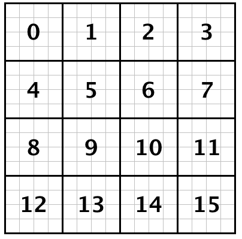
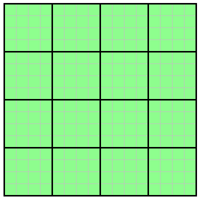
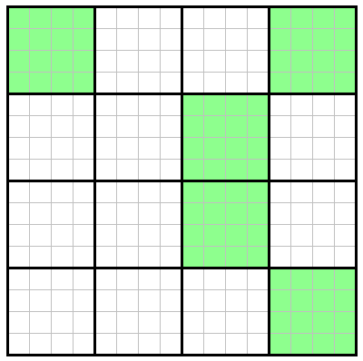
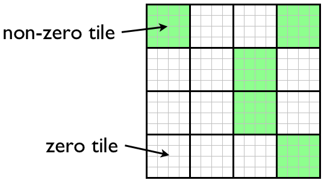

TiledArray is a framework for computing with block-sparse tensors on shared- and distributed-memory computers. It is designed to allow users to compose tensor expressions of arbitrary complexity in native C++ code that closely resembles the standard mathematical notation. TiledArray is designed for strong scalability in real applications, with pilot benchmarks having executed on hundreds of thousands of cores.
TiledArray is built on top of the MADNESS parallel runtime, denoted here as MADWorld. MADWorld provides a powerful task-based programming model that is key to TiledArray's scalability.
This document is intended for new users of TiledArray. It covers basic concepts, construction and initialization of tensors, composing tensor expressions, and accessing results. More advanced users are directed elsewhere in this Wiki for topics such as user-defined Tiles, etc.
NOTE: This guide, and TiledArray itself, is a work in progress. Therefore information may be changed or added at any time. While we strive to maintain a stable user interface, TiledArray is still evolving, sometimes in non-backward-compatible ways.
Primer
Concepts
Tensor/Array
TiledArray represents tensors as ordinary (multidimensional) arrays of values (i.e. nothing specifies the transformation properties of the array data to make it a proper tensor); henceforth we will use tensor and array interchangeably. An order-_n_ tensor (i.e., a tensor with n indices) is represented as an n-dimensional array. Tensor in TiledArray is a map from a Range of Indices (a hyperrectangular range in ℤn) to ring ℜ. The highest-level tensor data structure in TiledArray is a distributed tiled multidimensional array, modeling concept DistArray and represented by C++ class DistArray. DistArray is a directly-addressable sequence of tiles. Tiles are distributed among all or some processes in your application, hence only a subset of tiles is rapidly accessible from a given process. A DistArray is defined by a TiledRange, which specifies a cartesian tiling of the element Range, a Pmap, which maps tile index to the processor on which it resides, and a Shape, which specifies the structure of the array at the tile level (e.g. it can indicate whether a given tile is zero or not in a sparse array). TiledArray supports two variants of DistArray out of the box: dense, in which all tiles are assumed non-zero, and block-sparse, in which some tiles may be assumed to be zero, and thus omitted.
Range
An order-_n_ Range is a hyperrectangle in ℤn, where n ≥ 0 (currently TiledArray only supports ranges in the nonnegative subset of ℤn). Range is used to define valid values for element and tile Indices. The size of each mode (side) of the hyperrectangle is its extent; 0-based indexing of modes is used throughout.
Index
Index specifies a location in a range. An index may be a coordinate index or an ordinal index.
Coordinate Index
A sequence of non-negative n integers that represents an element of a Range. The first integer refers to the 0th mode of the range, etc. The following figure illustrates coordinate indices of the elements of a 4 by 4 matrix.

Ordinal Index
A single nonnegative integer value specifying the position of an element in a totally-ordered Range. Row-major lexicographical order is used by most classes in TiledArray. The following figure illustrates (row-major) ordinal indices of the elements of a 4 by 4 matrix.

TiledRange
TiledRange is a Range each mode of which is tiled, i.e. divided into contiguous, non-overlaping blocks; cartesian product of mode tilings defines the overall tiling of the range into subranges; each such subrange is a tile of the TiledRange. Tiles in a TiledRange are indexed just like the elements of the underlying range, hence the notions of element range and tile range arise in discussing TiledRange .
Tile
Tile of an array is any hyperrectangular sub-block of the array; a Tile is an array of same order as the base array. Division of DistArray into tiles is defined by its TiledRange. Tiles are local objects, i.e. only the process on which the tile resides has access to its data. Tile is defined by its Range.
Dense Array
A dense array is an array where all tiles are explicitly stored. All tiles of a dense array are non-zero tiles.

Block-Sparse Array
In a block-spare array, only non-zero blocks are stored. For example, the array pictured below contains four non-zero blocks (shown in green). You may specify any block in an array to be a zero tile or non-zero tile. For example, a 2D, block-sparse array may look like:

where zero tiles are shown in white, while non-zero tiles are shown in green.
Non-Zero and Zero Tiles
A non-zero tile is a sub-block of a DistArray that explicitly stores all elements for that tile. A zero tile is a sub-block of a DistArray that implicitly contains all zero elements, but is never stored. where all elements are equal to zero (Note: The data for zero tiles is not explicitly stored).

Owner
The owner of a tile is the process which stores that tile.
Pmap
A process map that defines ownership of each tile.
Shape
An object that specifies the structure of DistArray. E.g. it could be represented by a bitset where a set bit represents a non-zero tile and an unset bit represents zero tiles in a DistArray.
Implementation
TiledArray is a library written in standard C++ using features available in the 2017 ISO standard (commonly known as C++17). To use TiledArray it is necessary to #include header tiledarray.h. imports most TiledArray features into namespace TiledArray. For convenience, namespace alias TA is also provided. Although the alias can be disabled by defining the TILEDARRAY_DISABLE_NAMESPACE_TA preprocessor variable, all examples will assume that the TA alias is not disabled.
P.S. It sometimes may be possible to reduce source code couplings by importing only forwarding declarations. This is done by #includeing header tiledarray_fwd.h.
Parallel Runtime
TiledArray exposes several features of the MADWorld programming model, most importantly worlds, tasks, and futures.
A world, represented by an object of TA::World class (which is currently just an alias to madness::World), represents a collection of MPI processes. World is an extension of the MPI (intra)communicator concept that provides not only a communication context but also an execution context (such as task queue, etc.). Each array in TiledArray lives in a specific world (the default world, just like MPI_COMM_WORLD, spans the entire set of processes which called MPI_Init_thread).
Task is a unit of execution in MADWorld. Most operations in TiledArray are expressed as a collection of fine-grained tasks scheduled by the MADWorld; the fine-grained nature of tasks allows to express much more parallelism than is possible with traditional approaches like fork-join. Task parallel runtime of MADWorld also allows to overlap task execution (computation) with data movement (communication), and thus tolerate better all sources of latency.
When submitting a task to the task queue, a madness::Future object is returned, which is a placeholder for the result of a task. Futures may also be given to other tasks as input. In this way, futures are used to define task dependencies; they can be thought as nodes of the graph of tasks representing the computation. Note that MADWorld futures are similar to std::future (or, rather, std::shared_future) in standard C++, the main distinction is that madness::Future is global (i.e. a Future on one process can refer to a result produced on another) and it is possible to attach continuations to madness::Future.
Using TiledArray
A typical scenario for using TiledArray will perform the following steps:
- Initialize the parallel runtime environment
- Construct
DistArrayobjects - Initialize tile data of the arrays
- Implement algebraic tensor expressions Let's walk through each step in detail.
Initializing the Parallel Runtime Environment
To use TiledArray it is necessary to first initialize its runtime environment, such as MADNESS and its dependents, CUDA, etc:
TA::initialize initializes the TiledArray runtime and returns a reference to the default World object, which by default spans all MPI processes. TA::finalize shuts down the TiledArray runtime; after this it is no longer possible to use TiledArray, so this is typically done at the very end of the program. It is not possible to call TA::initialize more than once in your program.
Since TiledArray depends on MPI (via MADWorld), TA::initialize first checks if MPI had been initialized. If MPI is not yet initialized TA::initialize will do so by calling MPI_Init_thread. If MPI had already been initialized, then TA::initialize will only check that MPI initialization requested proper level of thread safety (serialized or full).
It is easy to initialize TiledArray on a subset of MPI processes by passing the corresponding MPI communicator to TA::initialize:
Construct an array
To construct a DistArray object, you must supply following the meta data:
- TiledRange
- (optional) Pmap
- (block-sparse only) Shape
Construct TiledRange object
A TiledRange is defined by tensor/Cartesian product of tilings for each mode. Tiling for 1 mode is represented by class TA::TiledRange1 which is most easily constructed by specifying tile boundaries as an array of indices. For example, the following code defines 2 tilings for interval [0,10), both consisting of 3 tiles:
The size of tiles in TR0 are 3, 5, and 2, whereas TR1's tiles has sizes 4, 3, and 3. Combining these tilings produces an order-2 TiledRange,
with 3 tiles in each mode, for a total of 10 x 10 (or 100) elements partitioned into 9 tiles, as pictured below:
[[images/tiledrange.png|height=250px]]
TR can be constructed directly without defining TiledRange1 objects first as follows:
The TiledRange constructor in the above example is useful for simple examples and prototyping code. However, in production code it will be likely necessary to construct TiledRange objects with an iterator list of TiledRange1 objects, e.g.:
where tile_boundaries defines the boundaries of tiles along a single dimension, ranges is the set of tile boundaries (one per dimension), and trange is the tiled range object that is used to construct DistArray objects.
Construct a Process Map Object
A process map is used to determine owner of a given tile with requiring communication between processes. Process maps also maintain a list of local tiles (tiles owned by the current process). TiledArray provides several different types process maps that can be used to initialize DistArray objects. The process maps provided by TiledArray are blocked, block-cyclic, hashed, and replicated. With the exception of the replicated process map (which always returns the current process as the owner) a process map will always return the same owner for a given tile on any process. You may also create a custom process map class that is derived from TA::Pmap.
Note: You are not required to explicitly construct a process map for a DistArray object as the DistArray object will construct one for you if none is provided. You may want to construct a process map yourself if you require a particular data layout. Process maps can also be used aid in the distribution of work among processes before your array object is constructed (this may be useful when constructing sparse shapes).
To construct a process map using one of the process map provided by TiledArray:
An program is provided by TiledArray in examples/pmap_test/ that demonstrates the tile distribution that is generated by the various process map objects. You can vary the output of this program by changing the number of MPI processes when running the test program. For example, the output for 16 MPI processes looks like:
Construct Shape Object
TiledArray supports two types of arrays: dense and sparse. If you are using dense arrays then you do not need to provide a shape object when constructing your arrays. However, to use block-sparse arrays you must use the sparse variant of the TA::DistArray class; you will also need to provide a TA::SparseShape object to its constructor. Note: although it is possible to use user-defined Shape classes, here we only discuss the stadnard TA::SparseShape class provided as a standard component of TiledArray.
A TA::SparseShape can be thought of as a dense (local) array whose elements are the Frobenius norm values for each tile. Hence the extents of the shape object are simply the extents of the tile range of the TiledRange object. Frobenius norm is chosen since its submultiplicative character makes it possible to bound the norms of tensor products; this is essential to be able to predict the shape of the result of a tensor expression.
There are two methods for constructing shape objects: distributed and replicated. You want to use distributed construction when computation of shape norms is expensive. When using distributed construction, contributions to the shape are reduced over all processes (via an all-reduce algorithm). Conversely, you want to use replicated construction when computing tile norms is inexpensive and takes less time than sharing the shape data.
The steps required to initialize a sparse shape are:
- Set the zero tile threshold
- Construct a [TiledRange](TiledRange) object
- Construct a [process map](Construct a process map) (optional)
Zero-Tile Threshold
The zero-tile threshold is used to determine whether a tile zero or non-zero. A tile is considered to be zero if the 2-norm of the tile divided by the number of elements in the tile is less than the given threshold. That is:
To set the zero-tile threshold call:
where my_threshold is the zero threshold you specify for your application. This threshold is a global value and is used for all SparseShape objects. Because the zero-tile threshold is shared by all shapes, it is recommended that you set this value only once at the beginning of your program. If you change the threshold during the execution of your application, it affect all subsequent zero-tile checks but it will not change shape data. You are responsible for ensuring that changes the the threshold value during execution do not adversely affect your application.
Distributed SparseShape Construction
With distributed SparseShape construction, the shape data is partially initialized in each process. With this method, only set tile norms for local tiles, otherwise the norm data stored in shape will be artificially inflated.
The advantage of this method is that computation of tile norms is distributed among all processes, but requires communication between processes. Distributed construction is preferred when the cost of recomputing tile norms on all processes is too high or impractical. The tile norms are shared among processes by the TA::SparseShape constructor via an all-reduce summation.
With distributed construction, it is convenient to use a process map to help partition the work load. The process map can then be used to construct TA::DistArray objects.
Then construct the TA::SparseShape object with the tile norm and tiled range.
Note that in the above example we loop over every possible local tile and compute it's norm. For mostly sparse arrays it is necessary to loop over the nonzero tiles only. The following example demonstrates how to do this for a matrix with nonzero blocks on the diagonal only.
Replicated SparseShape Construction
With replicated SparseShape construction, the shape data is fully initialized in all processes. It is important that the shape data be identical on all processes, otherwise your application will not function correctly (most likely it will deadlock).
The advantage of this method is that it does not require communication between process, but computation of tile norms for all tiles must be done on all nodes. This method is preferred when the cost of recomputation of tile norms is less than cost of communication used in distributed shape construction.
First, create a TA::Tensor<float> object that contains the 2-norm (or Frobenius Norm) of each tile.
Then construct the TA::SparseShape object with the tile norm and tiled range.
Construct a DistArray
Once you have a TiledRange and optionally shape and process map constructed, you are ready to construct a DistArray object. TA::DistArray class is parametrized by 2 types:
Tile– an Array type used to represent tiles of the DistArray object.Policy– a policy type that configures the behavior of DistArray; this includes whether DistArray is dense or block-sparse, which Range and TiledRange types are used, etc.
The ability to parametrize TA::DistArray is essential for many advanced applications: for example, the ability to customize tiles makes it possible to compute with arrays whose tiles are generated lazily (on-the-fly), support computing on heterogeneous platforms and/or with disk/NVRAM-based tile storage, utilize compressed tile formats, use multiprecision representations, etc. Similarly, by customizing Policy it is possible to implement more general sparsity types than illustrated in this guide. However, user-defined Tiles and Policies is a more advanced topic that will be covered elsewhere; here we will focus on the two most common cases that are supported out-of-the-box: dense and block-sparse DistArray with dense CPU-only tiles over integers, reals, and complex numbers. To make using such DistArrays easier TiledArray defines the following type aliases:
TA::TArray<Ring>: dense DistArray over ring typeRing(alias forTA::DistArray<TA::Tensor<Ring>,TA::DensePolicy>)TA::TArrayD: dense DistArray overdouble(alias forTA::TArray<double>)TA::TArrayF: dense DistArray overfloatTA::TArrayZ: dense DistArray overstd::complex<double>TA::TArrayC: dense DistArray overstd::complex<float>TA::TArrayI: dense DistArray overintTA::TArrayL: dense DistArray overlongTA::TSpArray<Ring>: block-sparse DistArray over ring typeRing(alias forTA::DistArray<TA::Tensor<Ring>,TA::SparsePolicy>)TA::TSpArrayD: block-sparse DistArray overdouble(alias forTA::TSpArray<double>)TA::TSpArrayF: block-sparse DistArray overfloatTA::TSpArrayZ: block-sparse DistArray overstd::complex<double>TA::TSpArrayC: block-sparse DistArray overstd::complex<float>TA::TSpArrayI: block-sparse DistArray overintTA::TSpArrayL: block-sparse DistArray overlong
Throughout the rest of the guide we will use these aliases instead of using more verbose TA::DistArray type (note, however, that when debugging your code that uses these aliases most debuggers will show the name of the full type rather than the alias names).
This example demonstrates how to construct dense and sparse DistArrays:
Recall that DistArray objects have their data distributed across the entire World in which they are constructed. To ensure a consistent state their constructor is a collective operation, i.e. it must be invoked on every processor with the same arguments.
Initializing Tiles
There are several methods available to initialize array tiles. Users can initialize tiles by calling a Array::set with index and
- a tile object,
- a future to a tile object,
- an iterator tile data, or
- a constant to fill the tile. The preferred method is to construct tiles via MADNESS tasks and provide a
madness::Futurefor the tile (see example below).
Explicit Tile Initialization
The easiest method to initialize a DistArray is to loop over local tiles and explicitly initialize each tile. This method distributes initialization work over all processes in the World. Here's the example:
The outer loop in this example iterates over the local tiles of array. Within the loop body we first create an tile (an object of TArrayD::value_type type, which in this case is TA::Tensor<double>). Then we loop over its elements and assign each to zero.
N.B. Of course, filling a DistArray with a constant is such a common use case that there's already a method for exactly that: array.fill(0.0).
There are more serious issues with the last example. First, it is too verbose. Second, it's not generic enough (i.e. trying to reuse it for a sparse DistArray would require changing a few lines). Both issues can be solved by using modern C++ features:
The new code is better in a few ways:
- explicit use of
array's type is eliminated thanks toautoanddecltype(caveat: type deduction can make it more difficult to diagnose compilation errors or introduce unwanted conversions), and - the inner loop has been replaced by a more efficient and cleaner
std::fill(N.B. any modern compiler at the max optimization level will replacestd::fillwith call tomemsetwhen appropriate, so this is the fastest way to fill the tile).
You can also initialize tile elements using a coordinate index instead of an ordinal index. The following example is equivalent to the previous example, except the tile elements are accessed via a coordinate index.
Note that in the examples shown so far tile initialization is parallelized over MPI processes only; on each process only the main thread does the initialization work. To parallelize over threads on each process we can also initialize tiles by submitting within MADNESS tasks. To do this we need to define a task function that will generate tiles. For example:
Using make_tile(), the first example can be rewritten to generate tiles in parallel.
Pushing off the initialization work to MADNESS tasks makes initialization asynchronous, i.e. actual initialization work will happen after task creation. However, in general there is no need to wait for the initialization work to complete: it is completely safe to use array in TiledArray expressions even though its initialization may not be complete yet. DistArray was designed for such asynchronous execution from the ground up.
Optimized Tile Initialization
In the above example, we generated one task per tile. However, there is a small overhead associated with generating and running a task. If the tiles are very small and/or the time required to initialize a tile is very small, then the overhead from creating and running tasks may cause your application to run slower in parallel than serially. To alleviate this problem we need to create tasks that initialize several tiles at once.
The example below, does this by recursively dividing an iterator range in half until the number of elements in the range is less than or equal to block_size. Once the size of the iterator range is small enough, the task will initialize the tiles in the iterator subrange. You do not want to make block size too small or too big, but it is usually fairly easy to achieve optimal performance.
make_array is the top-level function that initializes an array:
Complete Example Program
This example shows a complete program that constructs arrays in parallel and performs a tensor contraction.
Note that the tasks that initialize a and b will execute during and after the corresponding init_array statements; in fact initialization of a and b can overlap.. If your initialization work needs to be performed in particular sequence you may need to add world.gop.fence() to ensure that all preceding work in the particular world has finished.
Constructing Replicated Arrays
There are two methods for generating replicated Arrays. The first method distributes computation, where data for each tile is generated on one node and distributed to all other nodes. The communication cost for this method is O(n(n-1)). This type of construction is appropriate when the data is small but expensive to compute.
The second method is replicated computation, where the data for each tile is generated on all nodes. Since the data is generated on all nodes, there is no communication with this method. Replicated computation is appropriate for data that is inexpensive to compute and/or the communcation cost in the first method is greater than the computation time.
If you want to use a hybrid approach, where each tile is computed on a small subset of nodes and distributed to the remaining, you should construct a replicated Array and write your own algorithm to computing and distributing data.
Distributed Computation
The procedure for constructing a replicated array with distributed computation is the same as constructing other replicated arrays, except Array::make_replicated() is called after the local tiles have been inserted into the array.
Replicated Computation
The procedure for constructing a replicated array with replicated computation is similar to the distributed computation method, except the array is constructed with a replicated process map (pmap).
Tensor Expressions
Examples of tensor expressions: